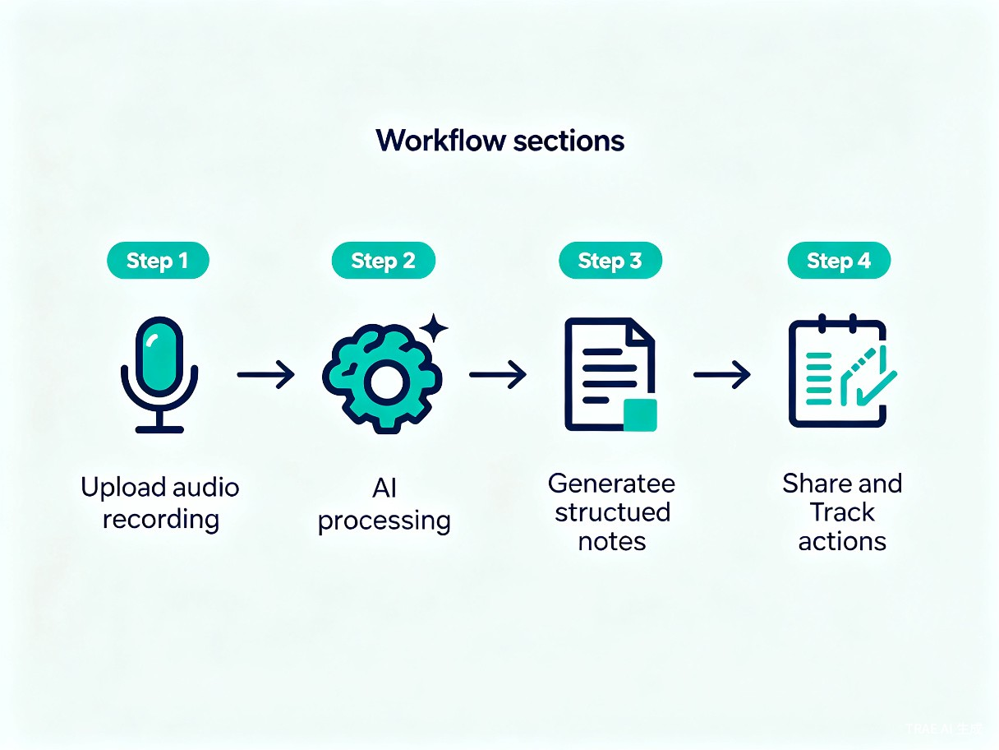
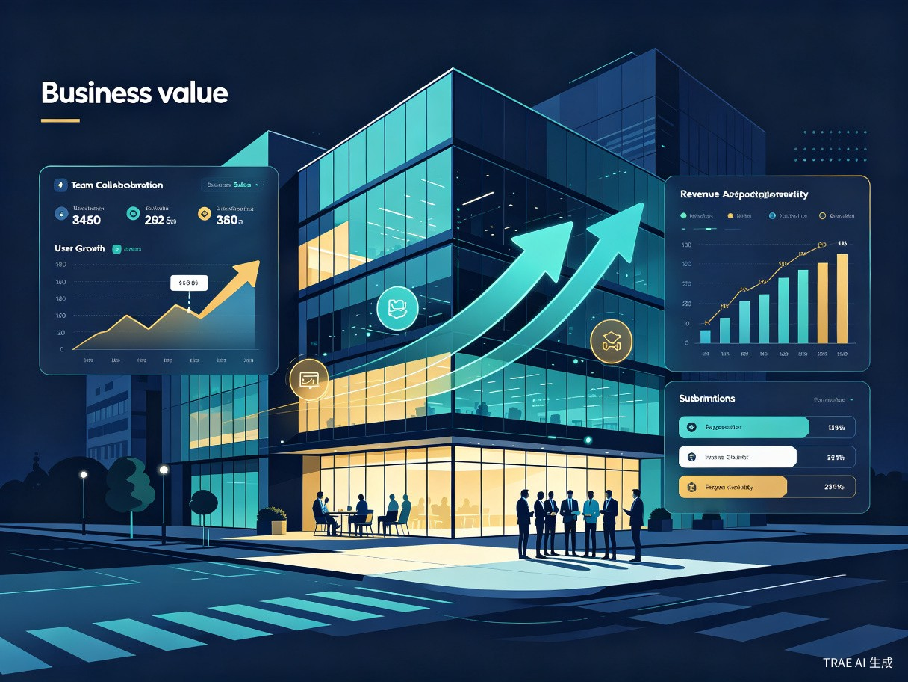
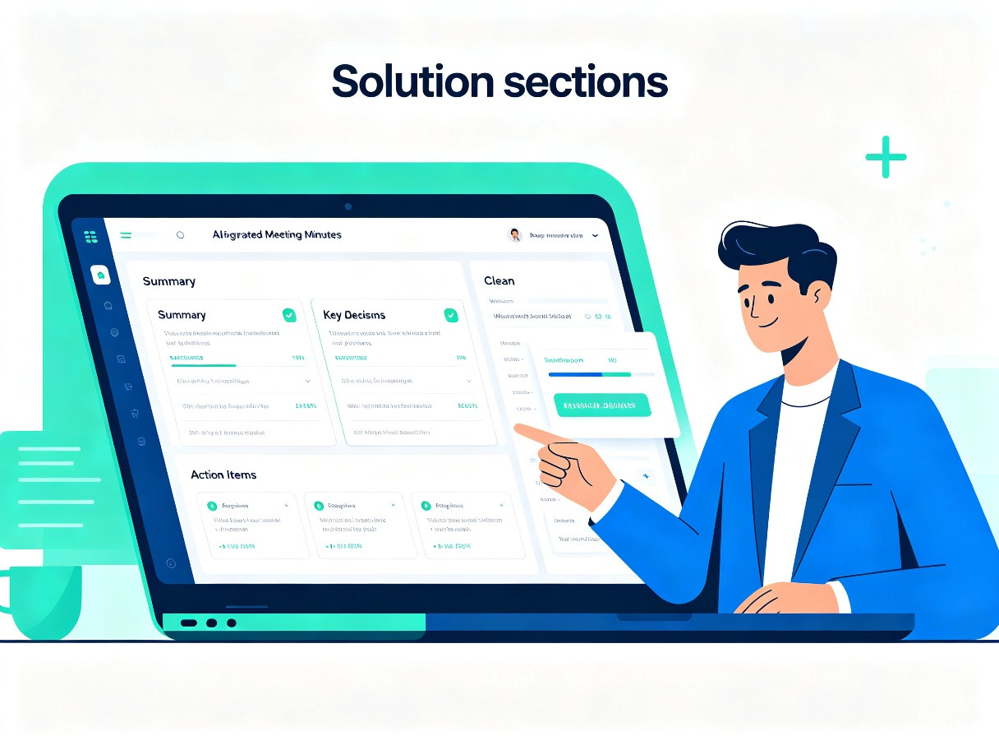

1 创意概述
1.1 创意名称
AI会议纪要大师（AI Meeting Minutes Master）—— 一款基于人工智能的会议智能助手，能够自动将会议语音/视频转化为结构清晰、带责任人和截止日期的行动方案。
1.2 想解决什么问题
职场中大量会议时间被浪费在整理会议记录和手动追踪待办事项上，导致信息不同步、行动难以落实。每次会议结束后，记录员需要花费大量时间回听录音、整理笔记，而团队成员对于"谁该做什么、何时完成"往往理解不一致。
1.3 为什么会想到做这个
在团队协作中，经常出现开完会大家对于谁该做什么、何时完成理解不一致的情况。需要一个工具能自动将会议语音转化为结构清晰、带责任人和截止日期的行动方案。
1.4 产品形态
一个AI驱动的会议助手，可以是网页应用或集成在钉钉、飞书中的小程序/机器人，覆盖会议全流程的智能化处理。
语音转文字
支持上传录音文件或实时接入会议，自动将语音转为高精度文字记录。
智能摘要
AI自动提取会议核心议题、关键决策和讨论要点，生成结构化摘要。
行动项追踪
自动识别待办事项，关联责任人和截止日期，支持进度追踪和提醒。
多平台集成
支持钉钉、飞书、企业微信等主流协作平台，无缝融入现有工作流。
2 目标用户及痛点
2.1 目标用户画像
| 用户类型 | 典型角色 | 核心需求 |
|---|---|---|
| 核心用户 | 项目经理、产品经理 | 快速整理会议纪要，追踪项目行动项 |
| 高频用户 | 团队负责人、部门主管 | 确保团队对齐信息，落实会议决策 |
| 广泛用户 | 所有需要频繁开会的职场人士 | 减少会后整理时间，不错过任何关键信息 |
| 潜在用户 | 会议记录员、行政助理 | 自动化重复性工作，提升工作效率 |
2.2 使用场景
- 团队周会：每周固定的团队例会，需要记录本周进展和下周计划
- 项目评审会：项目里程碑评审，涉及多方决策和任务分配
- 跨部门沟通会：不同部门之间的协作会议，需要明确各方职责
- 客户需求对接会：与客户的沟通会议，需要准确记录需求细节
- 头脑风暴会：创意讨论会议，需要捕捉所有灵感点
2.3 当前痛点分析
时间浪费严重
一场1小时的会议，整理纪要往往需要额外30-60分钟，记录员负担沉重。
信息遗漏频发
人工记录容易遗漏关键决策和细节，尤其是多线程讨论时。
行动项难追踪
会后团队成员对"谁做什么、何时完成"理解不一致，导致项目延期。
信息不同步
会议纪要分享不及时，缺席成员无法快速了解会议内容和决策。
3 产品方案
3.1 核心功能架构
flowchart TB
A[会议输入] --> B[语音识别引擎]
A --> C[视频/录屏解析]
B --> D[NLP语义理解]
C --> D
D --> E[结构化内容生成]
E --> F[会议摘要]
E --> G[关键决策提取]
E --> H[行动项识别]
H --> I[责任人关联]
H --> J[截止日期设置]
F --> K[会议纪要输出]
G --> K
I --> K
J --> K
K --> L[多平台分发]
L --> M[钉钉/飞书推送]
L --> N[邮件发送]
L --> O[Web端查看]
3.2 核心功能详解
① 智能语音转写
支持多种音频格式上传（MP3、WAV、M4A等），也支持实时接入主流会议软件（腾讯会议、钉钉会议、飞书会议等）的音频流。采用先进的ASR（自动语音识别）技术，支持中英文混合识别、多人说话人分离（Speaker Diarization），准确率可达95%以上。
② AI结构化摘要
基于大语言模型对转写内容进行深度语义理解，自动提取：
- 会议主题与目标：一句话概括会议核心议题
- 讨论要点：按议题分类整理主要讨论内容
- 关键决策：高亮标记所有达成的决策和结论
- 争议问题：标注未达成共识的待讨论事项
③ 行动项自动识别与追踪
这是产品的核心差异化功能。AI自动从对话中识别出所有待办事项，并智能提取：
| 行动项要素 | AI识别方式 | 示例 |
|---|---|---|
| 任务描述 | 语义分析提取动作+对象 | "完成首页UI改版" |
| 责任人 | 结合说话人识别+上下文指代消解 | 张三（设计组） |
| 截止日期 | 识别时间表达（本周五、6月底等） | 2026-06-19（本周五） |
| 优先级 | 基于语境判断紧急程度 | 高（阻塞下游开发） |
| 关联项目 | 关键词匹配已有项目 | V2.0改版项目 |
④ 多格式输出与分发
生成的会议纪要支持多种格式输出：
- 结构化文档：Markdown / PDF / Word格式，适合存档和分享
- 即时消息卡片：钉钉/飞书/企业微信的富文本卡片，适合群内推送
- 任务看板：自动同步到项目管理系统（Jira、Teambition、飞书项目等）
- 邮件摘要：自动发送给指定收件人列表
3.3 用户使用流程

4 竞品分析与差异化优势
| 对比维度 | AI会议纪要大师 | 飞书妙记 | 钉钉闪记 | Otter.ai |
|---|---|---|---|---|
| 语音转写 | ✔ 多语言高精度 | ✔ 中文优秀 | ✔ 中文优秀 | ✔ 英文优秀 |
| 智能摘要 | ✔ 深度语义理解 | ⚠ 基础摘要 | ⚠ 基础摘要 | ✔ AI摘要 |
| 行动项自动提取 | ✔ 核心功能 | ❌ 不支持 | ❌ 不支持 | ⚠ 基础支持 |
| 责任人自动关联 | ✔ 智能识别 | ❌ | ❌ | ❌ |
| 截止日期识别 | ✔ 自然语言理解 | ❌ | ❌ | ❌ |
| 任务看板同步 | ✔ 多平台 | ✔ 飞书项目 | ✔ 钉钉项目 | ❌ |
| 跨平台集成 | ✔ 钉钉+飞书+企微 | ⚠ 仅飞书生态 | ⚠ 仅钉钉生态 | ⚠ 海外平台 |
核心差异化：本产品最大的竞争优势在于行动项的深度智能提取——不仅识别"做什么"，更能自动关联"谁来做"和"什么时候完成"，并将行动项直接同步到项目管理系统，形成从会议到执行的闭环。
5 技术方案
5.1 技术栈选型
| 技术层 | 技术选型 | 选型理由 |
|---|---|---|
| 语音识别 | Whisper / 阿里云ASR | 高精度多语言支持，说话人分离能力 |
| 语义理解 | GPT-4 / 通义千问 / DeepSeek | 强大的自然语言理解和结构化输出能力 |
| 后端服务 | Python (FastAPI) + Go | 高并发处理，异步任务队列 |
| 前端应用 | React / Vue 3 + TypeScript | 现代化UI，响应式设计 |
| 数据库 | PostgreSQL + Redis | 结构化存储 + 高速缓存 |
| 消息队列 | RabbitMQ / Kafka | 异步处理长音频任务 |
| 部署架构 | Kubernetes + Docker | 弹性扩缩容，高可用部署 |
5.2 系统架构
flowchart LR
subgraph 客户端
A[Web端] --> C[API Gateway]
B[小程序] --> C
D[机器人] --> C
end
subgraph 服务层
C --> E[认证服务]
C --> F[会议处理服务]
C --> G[行动项服务]
C --> H[通知服务]
end
subgraph AI层
F --> I[ASR引擎]
F --> J[NLP模型]
G --> J
end
subgraph 数据层
K[(PostgreSQL)]
L[(Redis)]
M[对象存储OSS]
end
F --> K
F --> M
G --> K
H --> L
5.3 关键技术挑战
多人说话人分离
会议场景中多人交替发言，需要准确识别每位发言者并关联到具体人员。
指代消解
对话中大量使用"他""你""那个组"等代词，需要准确消解为具体的人名或组织。
时间表达理解
"下周三之前""大后天""月底"等模糊时间需要准确解析为具体日期。
数据安全合规
会议内容涉及企业机密，需确保数据加密存储、传输安全，符合隐私法规。
6 商业模式与市场分析

6.1 市场规模
全球会议转录市场规模预计在2027年将达到32亿美元，年复合增长率约15.2%。中国作为全球最大的企业协作市场之一，企业级SaaS市场规模已超过千亿元人民币，其中会议效率工具是增长最快的细分赛道之一。
6.2 定价策略
| 版本 | 目标客户 | 价格 | 核心功能 |
|---|---|---|---|
| 免费版 | 个人用户 | 免费 | 每月5次会议，基础转写+摘要 |
| 专业版 | 小团队（<20人） | 99元/月/团队 | 无限会议，行动项追踪，多格式输出 |
| 企业版 | 中大型企业 | 按规模定制 | 私有化部署，API集成，数据分析报表 |
6.3 变现路径
- SaaS订阅：按月/年订阅的核心收入来源
- API调用收费：为第三方开发者提供会议智能处理API
- 增值服务：定制化模板、行业专属模型、高级数据分析
- 平台分成：与钉钉、飞书等平台的应用市场合作分成
7 发展路线图
timeline
title AI会议纪要大师发展路线
section Q3 2026 - MVP
核心语音转写功能 : 基础会议摘要生成
行动项识别原型 : Web端上线
section Q4 2026 - 增长
钉钉/飞书小程序 : 任务看板集成
多语言支持 : 团队协作功能
section Q1 2027 - 扩展
企业版私有化部署 : API开放平台
行业定制模型 : 数据分析仪表盘
section Q2 2027 - 生态
国际化拓展 : 第三方应用市场
AI会议助手升级 : 智能会议调度
8 价值与意义
8.1 效率提升
将数小时的会议整理工作缩短至几分钟，让团队能快速对齐信息，将精力从"记录"转移到"执行"上。据估算，每位职场人士每周平均参加4-6场会议，使用AI会议纪要大师后，每周可节省3-5小时的整理时间。
8.2 商业价值
作为企业服务SaaS工具，可以按团队或公司规模提供付费版本，具有清晰的商业变现路径。目标在上线第一年获取1万+付费团队，实现千万级营收。
8.3 社会价值
促进信息公平
让每位团队成员都能平等获取会议信息，减少信息差带来的协作障碍。
推动绿色办公
减少纸质会议记录的使用，推动无纸化办公和数字化协作。
释放创造力
将人类从重复性记录工作中解放出来，专注于更有价值的创造性工作。

9 总结
AI会议纪要大师致力于解决职场会议效率低下这一普遍痛点，通过AI技术实现会议记录的自动化、结构化和智能化。产品的核心差异化在于行动项的深度智能提取——不仅记录"说了什么"，更明确"谁来做"和"何时完成"，真正实现从会议到执行的闭环。
作为企业级SaaS产品，具有清晰的市场需求、可行的技术方案和明确的变现路径，是一个兼具社会价值和商业价值的优质创意。